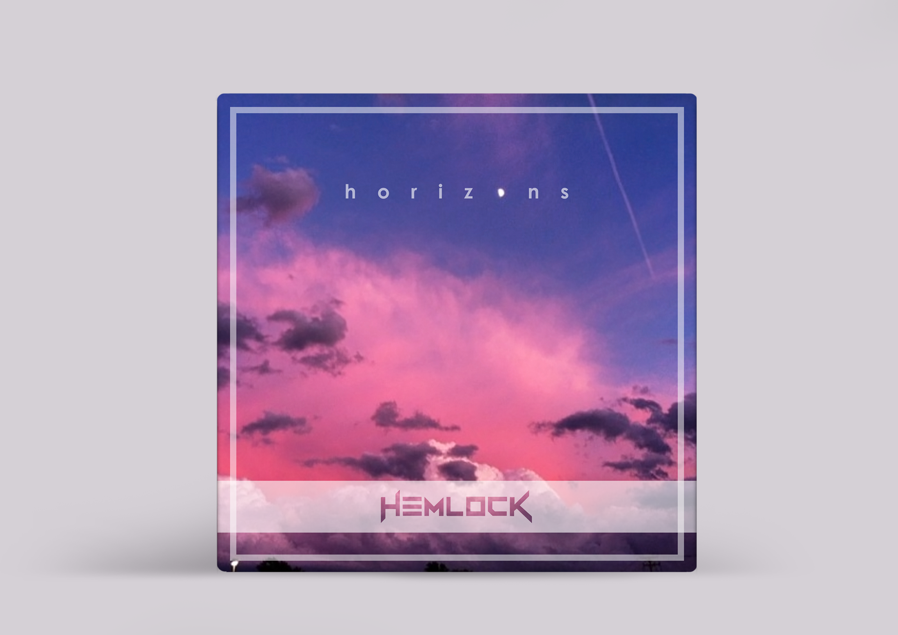

PREV
NEXT
"HORIZONS" ALBUM ARTWORK
Album Artwork done for the release of Hemlock's new track "Horizons". Original photography and design.
"Horizons" can be found on SoundCloud
here
.

BACK TO TOP
BACK TO TOP
Website design and development © Jenna Privatsky 2017